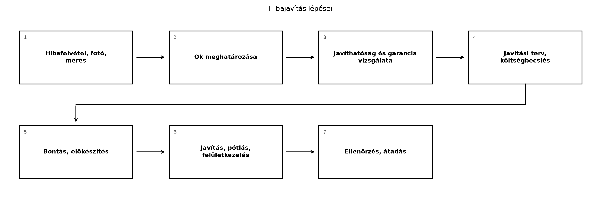
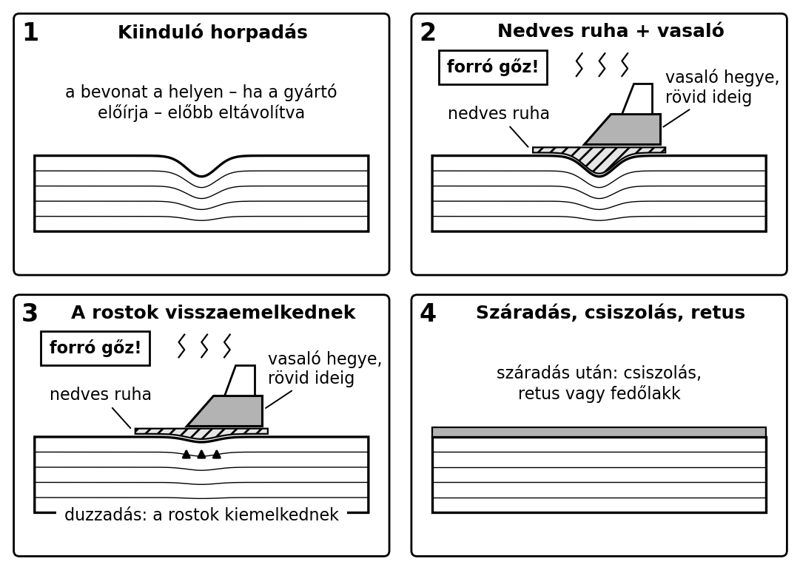

A vevő behoz egy régi széket: a hátsó lába mozog, terhelésre recseg. Egy másik megrendelő konyhabútorán a fiókelőlap lelóg, az ajtó állítócsavarja törött. A tapasztalt asztalos ilyenkor nem kezd azonnal fűrészelni, hanem hibafelvételt készít: megnézi, mi a tünet, mi okozhatja, javítható-e a darab, és mennyibe kerül a javítás. Ez a fejezet ezt a gondolkodásmódot tanítja meg: hogyan mérj fel, tervezz meg, javíts és árazz be egy sérült asztalosipari terméket.
A javítási munka gyakran olcsóbb és gyorsabb, mint egy új termék legyártása. Ugyanakkor nem minden sérült bútor javítható gazdaságosan. A hibafelvétel éppen arra való, hogy ne ígérj olyat, amit nem lehet teljesíteni, és a vevő is tisztán lássa, mit kap a pénzéért.
Képzelj el egy kávás széket. A hátsó láb és az oldalkáva találkozásánál a köldökcsap megmozdult. Ha a kezeddel megfogod a lábat és a kávát, kicsi, de érezhető elmozdulást tapasztalsz. Ülés közben a test oldalirányú mozgása folyamatosan „dolgoztatja” ezt a kötést. A ragasztófilm már elrepedt, a fa húzásnak és nyomásnak váltakozva van kitéve. Ha nem javítják meg, a csap meglazul, a fészek fala kitágul, végül a láb eltörik.
Az ilyen hibánál először fotót készítesz, megméred a fő méreteket, megjelölöd a laza pontokat, és feljegyzed a termék anyagát, szerkezetét és felületkezelését. Ezután dönthetsz a javításról.
Definíció. A hibafelvétel olyan dokumentált állapotfelmérés, amely rögzíti a termék azonosító adatait, a hibák tüneteit, valószínű okát, a javíthatóságot, valamint a javítási tervhez és költségbecsléshez szükséges adatokat.
Definíció. A javítási terv a hibafelvételre épülő műveleti lista, amely tartalmazza a bontás, előkészítés, javítás, felületkezelés és ellenőrzés lépéseit, a szükséges anyagokat, szerszámokat és becsült időt.
Definíció. A felújítás a termék használhatóságának és megjelenésének helyreállítása úgy, hogy az eredeti szerkezet fő részei megmaradnak. A restaurálás ezzel szemben az eredeti állapot, anyag és készítéstechnika megőrzését helyezi előtérbe, és gyakran műemléki, művészeti vagy muzeális tárgyakhoz kötött.
A hibafelvételi lap legalább a következőket tartalmazza:
| Csoport | Felvett adat |
|---|---|
| Termék | megnevezés, becsült kor, gyártó, méretek, anyag, felület |
| Helyszín | hol áll a bútor / hová építették be |
| Hibatünet | mi mozog, mi törött, hol kopott, hol akad |
| Ok | látható vagy valószínű ok, pl. ragasztófáradás, ütés, nedvesség |
| Javíthatóság | javítható, gazdaságosan javítható, csak részben, pótlás szükséges |
| Vevői kérés | javítás, felújítás, megőrzés |
| Garancia | van-e még rá vonatkozó jótállás vagy szavatossági igény |
A hibajavítás folyamata:

Szabály. A javítási tervet akkor fogadd el, ha a becsült javítási költség reálisan a termék értéke alatt marad, és a javítás után a szerkezeti szilárdság legalább az eredeti használatra alkalmas szintet eléri. Ha a törés teherviselő alkatrészt érint, vagy a felületkezelés azbeszt-, ólom- vagy más veszélyes réteget tartalmazhat, ne magánszorgalomból bonts; kérj szakvéleményt vagy vizsgálatot. (ellenőrizendő: konkrét veszélyesanyag-szabályozás, ha a régi bevonat gyanús.)
A meglazult kötést nem elég kívülről megragasztani. A régi, elöregedett ragasztófilm nem tapad jól. A kötést szabályosan szét kell bontani, meg kell tisztítani, és csak utána szabad újraragasztani.
Az ábrán a kávát a csapok tengelyével párhuzamosan húzzuk le a lábról; a csap fele-fele (20–20 mm) ül a lábban és a kávában, a fészkek falán az elöregedett ragasztófilm látszik. A HTML-kiadásban az alábbi eljárás öt fő lépése (bontás, tisztítás, száraz próba, ragasztás, hevederes szorítás és átlómérés) lépésenként lejátszható.
Eljárás – meglazult széklábkötés újraragasztása.
Gépbiztonság. A javítás során jellemzően kéziszerszámokkal és kézi kisgépekkel dolgozol. Ha csiszológépet vagy fúrógépet használsz, csak ép, szigetelt, kifogástalan állapotú gépet vegyél kézbe. A forgó szerszámhoz kesztyűt ne viselj. Porgeneráló tisztításnál használj elszívót és FFP-osztályú légzésvédőt, különösen régi, ismeretlen bevonatnál. A véső mindig a testtől távol, rögzített munkadarabon dolgozzon.
Hiba. Egy tömör bükk támlás szék támlalécén hosszú repedés fut végig, a léc a csapnál eltört. A vevő az ülésre huppanva hallotta a reccsenést. A fényképen látszik, hogy a törés nem friss: a repedés mentén sötét, régi ragasztó- és pormaradvány van.
Lehetséges okok
Vizsgálat
Ha a törés a kötésben, teherviselő helyen van, akkor a ragasztás önmagában nem elég. A lécet pótolni kell. A léc színét, rostirányát és méreteit az eredeti alkatrészhez kell igazítani. A régi alkatrész nem ragasztható felelősen, mert a repedés végigvezeti a húzófeszültséget.
Javítás és megelőzés
A felületi sérüléseknél először azt kell eldönteni, hogy csak a bevonat sérült-e, vagy a faanyag is. A felületkezelő réteg hibáit a Felületkezelési hibák és a felületkezelési számítások alfejezetben tárgyaltuk; itt a javítási oldalt mutatjuk be.
A leggyakoribb sérülések:

Szabály. A pác, lakk, viasz és oldószer kiválasztásakor mindig a gyártó biztonsági adatlapját és műszaki adatlapját kell követni. A régi bevonaton való javítás előtt próbadarabon ellenőrizd a szín, fény és tapadás illeszkedését. (ellenőrizendő: a konkrét termék gyártói előírása.)
A tömőviasz-javítás lépései:
A bútorokon és nyílászárókon a vasalat sokszor hamarabb kopik, mint a fa. A törött zsanér, a megnyúlt csavarhely és a lelógó ajtó klasszikus javítási feladat.
Eljárás – vasalatcsere.
Faablak javítása. Az ablak javítása a 39.1–39.3 alapján: (1) hibafelvétel (beázás, huzat, szorulás); (2) a régi tömítés kiszedése és új tömítés behúzása a horonyba, a sarkoknál folyamatosan; (3) a bukó-nyíló vasalat utánállítása a 39.3 szerint; (4) korhadt rész (pl. alsó szárnyléc, vízvető) kivágása és azonos fafajú betéttel, D4 ragasztóval pótlása; (5) a felületi rendszer javítása (ellenőrizendő: gyártói felületkezelési rendszer). Üvegezőléc cseréjénél az üveget a 39.2 szerint ékeld és tömítsd.
Az épületasztalos termékeknél a hiba gyakran nem anyaghiba, hanem beállítási, nedvességi vagy rögzítési hiba. A beltéri ajtó nyáron dagad, télen összehúzódik. A vetemedett ajtólap sarka a padlóhoz ér, a tokba akad.
Szabály. A nyílászáró beállításánál először a vasalatot és a tok rögzítését ellenőrizd. Csak akkor gyalulj vagy csiszolj az ajtólapból, ha a szerkezeti hézagok már sehol sem csökkenthetők. A túlzott gyalulás tönkreteszi a lap szélét, és a tömítés sem fog zárni.
Az akadó beltéri ajtó tipikus vizsgálati sora:
Definíció. A felújítás során az asztalos a termék használhatóságát és megjelenését helyreállítja, de nem köti az eredeti technológia és anyag szigorú megtartása. A restaurálás viszont az eredeti anyagok, felületek és szerkezetek megőrzésére törekszik, és csak megfelelő képzettséggel, gyakran intézményi engedéllyel végezhető. (ellenőrizendő: a muzeális tárgyak restaurálására vonatkozó hatályos előírások.)
Ha a vevő „csak fesse le” a nagymama kézzel faragott, értékes szekrényét, állj meg. A rossz csiszolás, a levakarás, a nem megfelelő lakk tönkreteheti az eredeti patinát és a tárgy értékét. Ilyenkor ne vállalj látatlanban restaurálást. Ajánlj konzerváló-restaurátort, vagy add át a feladatot olyan műhelynek, amelynek van ilyen gyakorlata.
Cél: mozgó, recsegő kávakötés teherviselővé tétele újra ragasztással.
Anyagok: D3 vagy D4 faragasztó, pótláshoz bükk köldökcsap, esetleg viaszjavító, csiszolóanyag, pamutkendő.
Szerszámok és gépek: csavarhúzó, gumikalapács, tönkfa, véső, derékszögelő, mérőszalag, szorító vagy hevederes prés, kézi csiszológép elszívóval, fotóeszköz.
Gépbiztonság. A művelet betanított, felügyelt tanulónak szól; védőberendezés nélkül, egyedül, fáradtan ne végezd. Forgó szerszámhoz ne viselj kesztyűt. Viselj védőszemüveget, és poros tisztításnál FFP-osztályú légzésvédőt. A vésőt csak rögzített munkadarabon, a vágóiránytól távol tartott kézzel használd.
Indítás előtti ellenőrzés kézi kisgépnél: kábel, csatlakozó, kapcsoló épsége; a csiszolótalp rögzítése; az elszívó tömlő csatlakoztatása. Ha a gép szikrázik, rendellenesen melegszik vagy rezeg, ne indítsd el.
Lépések:
Dokumentálás: fénykép a bontás előtt, a javítás közben és a kész állapotról, valamint a hibafelvételi lap és a költségbecslés.
A javítás minőségét a következőkkel ellenőrizd:
Egy bútorasztalos műhelybe behoztak egy tölgy konyhaszéket: a két első láb kötése megmozdult, az egyik láb törés gyanúja miatt be is repedt. A vevő azt kérte, ragasszák össze gyorsan, mert „úgyis látszik, hogy fából van”. A kolléga először hibafelvételt készített. A repedés a láb tőcsavarjánál húzódott, nem a felületen. A kötés szétbontásánál kiderült, hogy a fészek fala korábbi, rosszul elvégzett ragasztás miatt kitágult. A gyors ragasztás nem oldotta volna meg a terhelést, az első ülésnél újra törött volna. A láb cseréje mellett döntöttek. A pótláb elkészítése és felületi retusa többe került, mint egy zsák ragasztó, de a szék újra biztonságos lett. A tanulság: a hibafelvétel nem időpocsékolás, hanem a javítás felelős első lépése.
1. feladat (A)
Sorold fel, hogy milyen adatokat rögzítesz egy szék hibafelvételi
lapján. Adj meg legalább hat adatcsoportot.
2. feladat (A)
Egy törött tömör bükk támlaléc pótlásához kész méret
450 mm × 60 mm × 18 mm alkatrész kell. Számítsd ki az
alkatrész tömörfa-térfogatát m³-ben. Adj hozzá 20 %
anyagráhagyást a megmunkálási veszteségre, és határozd meg a beszerzendő
térfogatot.
3. feladat (B)
Készíts költségbecslést egy meglazult székláb javítására az alábbi
mintaadatokkal:
| Tétel | Mennyiség | Egység | Egységár | Költség |
|---|---|---|---|---|
| D3 ragasztó | 0,05 | kg | 4 200 Ft/kg | 210 Ft |
| bükk köldökcsap | 4 | db | 45 Ft/db | 180 Ft |
| csiszolószivacs | 1 | db | 120 Ft/db | 120 Ft |
| viaszjavító | 0,04 | kg | 6 000 Ft/kg | 240 Ft |
| bérköltség | 0,8 | óra | 8 500 Ft/óra | 6 800 Ft |
| szállítás | 1 | alkalom | 2 000 Ft | 2 000 Ft |
Számítsd ki a közvetlen költséget, majd adj hozzá 15 %
tartalékot. Mennyi a becsült nettó javítási ár?
4. feladat (B)
Írj hat lépésből álló műveletsort egy meglazult széklábkötés
újraragasztásához. Minden lépés után írj egy ellenőrzési pontot.
5. feladat (C)
Egy vevő hoz egy festett, régi, kézzel faragott szekrényt, és azt kéri,
csiszold le és fújd be modern poliuretán lakkal. Hogyan döntesz? Milyen
határig vállalhatja ezt egy asztalos, és mikor kell restaurátorhoz
irányítani a munkát?
6. feladat (D)
Válassz ki egy valós vagy elképzelt sérült bútort. Készítsd el a
hibafelvételi lapot, határozd meg a javítási tervet, és adj
költségbecslést táblázatos formában. A feladatot a munkanaplóban is
rögzítsd.
1. feladat (A)
Hibafelvételi adatcsoportok: megnevezés, becsült kor, méretek; anyag és
felület; a hiba tünete; valószínű ok; javíthatóság; vevői kérés;
garanciális helyzet; fotó- és rajzhivatkozás.
2. feladat (A)
Alkalmazott képlet:
Behelyettesítve:
Az anyagráhagyással növelt mennyiség:
Kerekítve: 0,00058 m³ beszerzendő anyag.
3. feladat (B)
Közvetlen anyagköltség:
Bérköltség: 6 800 Ft, szállítás: 2 000 Ft.
Közvetlen összesen:
Tartalék 15 %:
Nettó becsült javítási ár:
Kerekítve 11 000 Ft nettó. A mintaértékek tájékoztató
jellegűek.
4. feladat (B)
A műveletsor lehet például: fotózás, bontás, ragasztóeltávolítás,
szárazpróba, ragasztás, préselés. Minden lépésnél ellenőrzési pont, pl.
derékszög, szoros illeszkedés, ragasztófilm.
5. feladat (C)
A döntés a tárgy értékétől, korától és a vevő elvárásától függ. Ha a
szekrény értékes kézműves darab, a csiszolás és a modern lakk
tönkreteheti a patinát. Ilyenkor az asztalos ne vállalja a restaurálást,
hanem irányítsa restaurátorhoz. Egyszerű, nagy számban készült bútornál
a felújítás elvégezhető, de akkor is a legkíméletesebb módszert válaszd.
Régi festett bútornál a csiszolás előtt gyorsteszttel vagy
laborvizsgálattal ellenőrizd az ólomtartalmat; gyanú esetén ne csiszolj
szárazon és ne égesd le, hanem nedves eljárással, elszívással, P3/FFP3
légzésvédővel dolgozz, és a hulladékot veszélyes hulladékként kezeld
(ellenőrizendő: vonatkozó munkavédelmi és hulladékgazdálkodási
előírás).
6. feladat (D)
A megoldás egyéni, de tartalmaznia kell a hibafelvételi lap elemeit, a
javítási terv lépéseit és a költségbecslést. A műhelyben a dokumentációt
fényképpel, méréssel és írásos jegyzőkönyvvel zárd le.
Az asztalosipari hibajavítás mindig hibafelvétellel kezdődik. A hibafelvétel rögzíti a termék adatait, a tüneteket, az okokat, a javíthatóságot és a költségbecslést. A meglazult kötést csak bontás, ragasztóeltávolítás, szárazpróba és egyenletes préselés után szabad újraragasztani. A törött alkatrészt azonos fafajból, azonos rostiránnyal és az eredeti csatlakozással kell pótolni. A felületi sérüléseknél a legkisebb beavatkozástól haladj a csiszolás és részleges újrafelületkezelés felé. A vasalatcserénél a régi rögzítéseket, furatokat is ellenőrizni kell; az akadó nyílászárónál előbb a vasalatot és a tokot állítsuk, ne rögtön az ajtólapot vágjuk. A felújítás és a restaurálás határa akkor fontos, ha a bútor eszmei, művészeti vagy műemléki értéket képvisel.
Továbbvitt eredmény. A hibafelvétel, a javítási terv és a költségbecslés módszere közvetlenül felhasználható a Szerződéskötés, garancia, megrendelő, szállítólevél és számla alfejezetben, ahol a garanciális és szavatossági helyzeteket kell kezelni, valamint a A vizsga szerkezete és elméleti mintafeladatok alfejezetben, ahol a vizsgaremek hibáinak ellenőrzését és javítását dokumentálni kell.
A fejezet a következő forrástípusokra épül: általános asztalosipari szakmai gyakorlat, a faanyagok és ragasztók gyártói adatlapjai, felületkezelő anyagok biztonsági adatlapjai, valamint a faipari szakrajz és minőségbiztosítás alapelvei. Ellenőrizendő: a hivatkozott ragasztóosztályok (D3, D4) aktuális szabványi jelölése és gyártói előírásai; a mintaárak, órabérek és a 15 % tartalék mértéke; a veszélyes régi bevonatokra vonatkozó munkavédelmi és hulladékkezelési előírások; a garanciális és szavatossági szabályok hatályos szövege; valamint a restaurálásra vonatkozó szakmai és jogi keretek. A gyakorlati értékek tanulási példák, éles munkában a gépkönyv, a termék adatlapja és a hatályos szabvány a mérvadó.